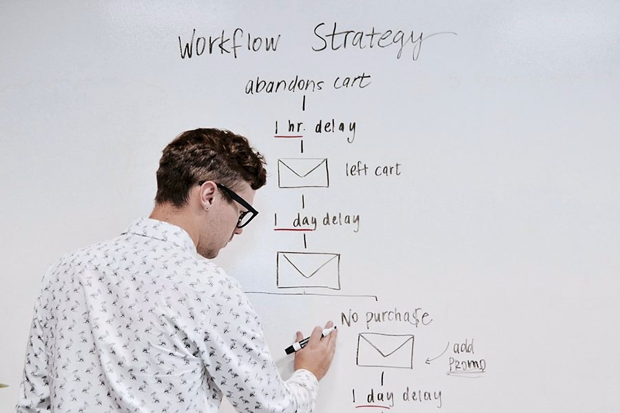

7/24 Online Destek
İhtiyaç duyduğunuz her an ulaşabileceğiniz çevrimiçi destek sistemimizle taleplerinizi hızlı ve etkin şekilde karşılıyoruz.
SAP'nin finansal çözümleriyle işletmenin tüm süreçlerini kapsayan danışmanlık; ihtiyaç belirlemeden sistemin etkin kullanımına kadar proje bazlı yürütülür.
SAP'nin sektörel ve teknolojik derinliği ile kendi saha deneyimimizi birleştiriyoruz; farklı fonksiyonları tek akışta toplayan, kurum yapınıza uyarlanmış süreçler kuruyoruz.
Bir iş sürecinin doğru kurgulanması; müşteri ihtiyacına odaklanması, sorumlulukların net tanımlanması ve paydaşlar arasında şeffaflık sağlanması demektir. Bu nitelikler, şirketlerin temel kaynaklarını doğru ve etkili kullanabilmesine olanak tanır.

BRN Yazılım, süreç danışmanlığı hizmetlerini finansal modüller ve ABAP geliştirmeleri üzerine kurgular. Sektörel deneyimini teknoloji bilgisiyle birleştirerek işletmenizin süreçlerinde daha yüksek verimlilik ve katma değer yaratır.
Kaynakların verimli kullanımı, teknolojik imkânlar ve sınırlamalarla doğrudan ilişkilidir. Bu nedenle her uyarlamada standart çözümü mü yoksa özel geliştirmeyi mi kullanacağımıza birlikte karar veririz.
SAP çözümlerinizin sürekliliğini sağlamak ve iş süreçlerinizin kesintisiz ilerlemesini temin etmek amacıyla kapsamlı destek hizmetleri sunuyoruz.
İhtiyaç duyduğunuz her an ulaşabileceğiniz çevrimiçi destek sistemimizle taleplerinizi hızlı ve etkin şekilde karşılıyoruz.
Sistemimiz üzerinden ilettiğiniz talepler önceliklendirilerek ilgili uzmanlarımız tarafından titizlikle takip edilir.
Sisteminizin gereksinimlerine göre uzaktan erişimle hızlı çözüm sunar, gerektiğinde yerinde destek veririz.
Belirlenen hizmet düzeyi anlaşması çerçevesinde yanıt ve çözüm süreleri konusunda taahhütlerimiz doğrultusunda çalışırız.
Sistem performansını düzenli izler, olası sorunları önceden tespit ederek proaktif çözümler sunarız.
Açılan talepler, çözüm süreleri ve tekrar eden sorunlar aylık raporlarla şeffaf biçimde paylaşılır.
Ön görüşme ve ihtiyaç analizi ücretsizdir; talebinize aynı iş günü içinde dönüş yapıyoruz.